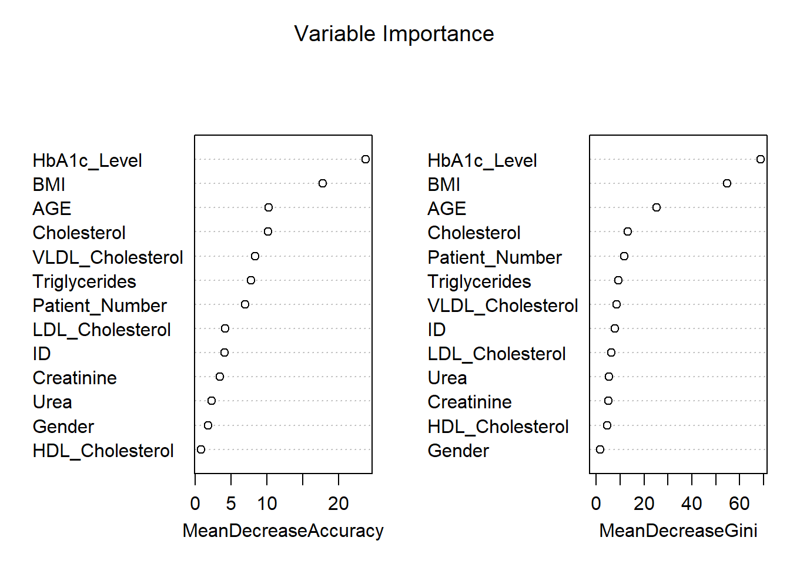
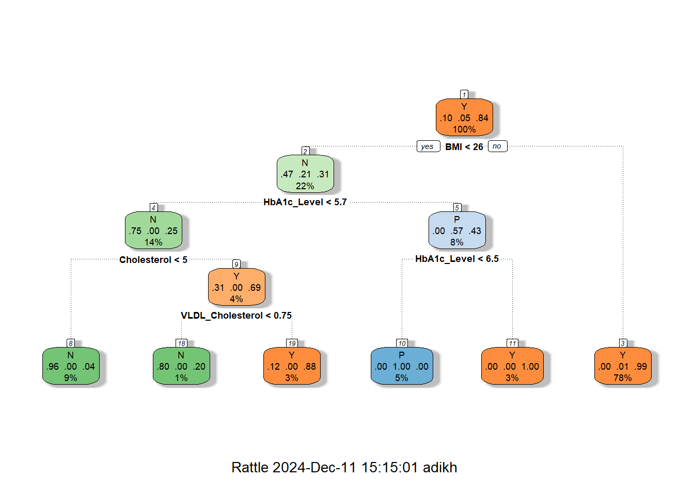

ID No_Pation Gender AGE Urea Cr HbA1c Chol TG HDL LDL VLDL BMI CLASS
1 502 17975 F 50 4.7 46 4.9 4.2 0.9 2.4 1.4 0.5 24 N
2 735 34221 M 26 4.5 62 4.9 3.7 1.4 1.1 2.1 0.6 23 N
3 420 47975 F 50 4.7 46 4.9 4.2 0.9 2.4 1.4 0.5 24 N
4 680 87656 F 50 4.7 46 4.9 4.2 0.9 2.4 1.4 0.5 24 N
5 504 34223 M 33 7.1 46 4.9 4.9 1.0 0.8 2.0 0.4 21 N
6 634 34224 F 45 2.3 24 4.0 2.9 1.0 1.0 1.5 0.4 21 N
7 721 34225 F 50 2.0 50 4.0 3.6 1.3 0.9 2.1 0.6 24 N
8 421 34227 M 48 4.7 47 4.0 2.9 0.8 0.9 1.6 0.4 24 N
9 670 34229 M 43 2.6 67 4.0 3.8 0.9 2.4 3.7 1.0 21 N
10 759 34230 F 32 3.6 28 4.0 3.8 2.0 2.4 3.8 1.0 24 NFinal Project
DIABETES: OVERVIEW, CAUSES, AND IMPACT
by Group 2,
ADITYA VIJAY KHADSE
ANKIT SANJAY BORLE
AJITH RAJU AUMBATI
ABSTRACT:
This study leverages a comprehensive diabetes dataset to predict diabetes classification using key clinical variables. Visualization techniques were employed to explore patterns and correlations within the data, providing valuable insights into factors influencing diabetes outcomes. Regression analysis was used to build predictive models, enabling the identification of significant predictors for diabetes classification. The findings help explain how clinical variables interact in the diagnosis of diabetes and form a basis for data-driven approaches to the improvement of early detection and management of the disease.
INTRODUCTION:
Diabetes is one of the major health challenges on the whole planet; it involves millions of people, bringing a considerable contribution to morbidity and mortality rates. Characterized by chronic hyperglycemia, diabetes results either from impaired insulin production or its action, leading to serious complications if not effectively managed. Thus, early diagnosis and proper classification of diabetes are crucial for implementing timely interventions and personalized treatment plans.
With the ever-increasing availability of healthcare data, the potential to leverage data analytics in improving our understanding of diabetes is growing. This research study uses a rich dataset that includes clinical and demographic variables for the prediction of diabetes classification with insights into the factors that influence disease outcomes. In this study, we use both the technique of visualization and regression analysis to investigate patterns in data that may result in the diagnosis of diabetes and pinpoint major predictors. This research illustrates the potential of data-driven approaches to further diagnostic precision and clinical decision-making in diabetes care.
DATASET:
The dataset used in this study includes 1,000 entries, with a diverse set of clinical and demographic variables related to diabetes. Each record contains the following attributes: Patient ID, gender, age, urea levels, creatinine ratio (Cr), glycated hemoglobin (HbA1c), cholesterol (Chol), triglycerides (TG), high-density lipoprotein (HDL), low-density lipoprotein (LDL), very-low-density lipoprotein (VLDL), body mass index (BMI), and a diabetes classification (CLASS) indicating whether the patient is diabetic, non-diabetic, or prediabetic. This dataset provides a robust foundation for analyzing the relationships between these variables and diabetes status, offering a resourceful insight into predictive modeling and valuable ideas about diagnostics and management related to diabetes.
Here is a list of features (columns) in the dataset, along with their brief descriptions and types:
| Feature | Type | Description |
|---|---|---|
| ID | Numeric | Unique identifier for each record. |
| No_Pation | Numeric | Patient identification number from the medical center. |
| Gender | Categorical | Gender of the patient (e.g., Male or Female). |
| AGE | Numeric | Age of the patient in years. |
| Urea | Numeric | Urea level in the blood, indicative of kidney function. |
| Cr | Numeric | Creatinine level in the blood, used to assess kidney health. |
| HbA1c | Numeric | Glycated hemoglobin percentage, a key indicator of diabetes. |
| Chol | Numeric | Total cholesterol level in the blood. |
| TG | Numeric | Level of triglycerides in the blood, indicating fat metabolism. |
| HDL | Numeric | “Good cholesterol,” helps reduce cardiovascular risks. |
| LDL | Numeric | “Bad cholesterol,” associated with plaque buildup in arteries. |
| VLDL | Numeric | A type of lipoprotein indicating fat transport. |
| BMI | Numeric | A measure of body fat based on weight and height. |
| CLASS | Categorical | Diabetes classification, indicating if the patient is diabetic, pre-diabetic or non-diabetic. |
WHY THIS DATASET:
The selected dataset offers valuable insights into Type 2 Diabetes, the most common variant of the disease. Medical and demographic parameters include the likes of HbA1c and lipid profiles, BMI, kidney function markers (urea and creatinine), age, and gender. Features offer an in-depth exploration not only of the biological issues but also the lifestyle effects that lead to the complications of diabetes.
HbA1c is a major indicator of long-term blood glucose control and, thus, stands central in understanding the diagnosis and management of diabetes. The lipid profile data on LDL, HDL, and VLDL allow the investigation into risks related to cardiovascular aspects. Moreover, BMI has critical connotations for obesity, being one of the prime contributory factors towards Type 2 Diabetes. In this context, the inclusion of markers about kidney function underlines the dataset’s usefulness in studying diabetes complications, such as nephropathy.
This dataset is a view of real-world conditions and demographic variations, thus providing ample opportunities to study how different factors, such as age and gender, influence the risk and outcomes of diabetes. The diverse nature of features makes it very suitable for building predictive models that identify high-risk individuals and trends, thus contributing to early diagnosis and prevention.
METHODOLOGY:
The first preprocessing step for the dataset is to import it into the analysis environment and clean the data. This includes checking for missing values to ensure the completeness of the data, identifying duplicates to avoid redundancy and errors in analysis, and renaming columns to more descriptive and standardized names for better clarity and consistency; thus, making the dataset easier to work with and interpret in further steps.
Load Dataset and check for empty values
Code
# Load dataset
data <- read.csv('C:/Users/adikh/OneDrive/Desktop/Stat/AnkitBorle/Dataset.csv')
sum(is.na(data))[1] 0Check for duplicate rows
Code
# Check for duplicate rows
duplicate_rows <- sum(duplicated(data))
duplicate_rows[1] 0Total number of rows
Code
sum(complete.cases(data))[1] 1000Columns in Dataset
Code
library(dplyr)
# Rename the columns
data <- data %>%
rename(
Patient_Number = No_Pation,
Creatinine = Cr,
HbA1c_Level = HbA1c,
Cholesterol = Chol,
Triglycerides = TG,
HDL_Cholesterol = HDL,
LDL_Cholesterol = LDL,
VLDL_Cholesterol = VLDL
)
colnames(data) [1] "ID" "Patient_Number" "Gender" "AGE"
[5] "Urea" "Creatinine" "HbA1c_Level" "Cholesterol"
[9] "Triglycerides" "HDL_Cholesterol" "LDL_Cholesterol" "VLDL_Cholesterol"
[13] "BMI" "CLASS" Removing leading and trailing spaces
Before removing the spaces
Code
table(data$CLASS)
N N P Y Y
102 1 53 840 4 Code
# Apply trimws to all columns in the dataset
data <- data.frame(lapply(data, function(x) {
if (is.character(x)) {
trimws(x) # Trim whitespace for character columns
} else {
x # Leave other columns unchanged
}
}), stringsAsFactors = FALSE)After removing the spaces
Code
table(data$CLASS)
N P Y
103 53 844 Calculate summary statistics (mean, median, standard deviation) for BMI and lipid profiles (LDL, HDL, TG), stratified by CLASS (diabetic vs. non-diabetic).
Code
library(knitr)
library(kableExtra)
# Assuming `data` is your dataframe loaded into R
# Group by CLASS and calculate summary statistics
summary_stats <- data %>%
group_by(CLASS) %>%
summarise(
BMI_mean = mean(BMI, na.rm = TRUE),
BMI_median = median(BMI, na.rm = TRUE),
BMI_sd = sd(BMI, na.rm = TRUE),
LDL_mean = mean(LDL_Cholesterol, na.rm = TRUE),
LDL_median = median(LDL_Cholesterol, na.rm = TRUE),
LDL_sd = sd(LDL_Cholesterol, na.rm = TRUE),
HDL_mean = mean(HDL_Cholesterol, na.rm = TRUE),
HDL_median = median(HDL_Cholesterol, na.rm = TRUE),
HDL_sd = sd(HDL_Cholesterol, na.rm = TRUE),
TG_mean = mean(Triglycerides, na.rm = TRUE),
TG_median = median(Triglycerides, na.rm = TRUE),
TG_sd = sd(Triglycerides, na.rm = TRUE)
)
# View the results
summary_stats %>%
kable(format = "html", digits = 2) %>%
kable_styling(font_size = 10) # Adjust the font size as needed| CLASS | BMI_mean | BMI_median | BMI_sd | LDL_mean | LDL_median | LDL_sd | HDL_mean | HDL_median | HDL_sd | TG_mean | TG_median | TG_sd |
|---|---|---|---|---|---|---|---|---|---|---|---|---|
| N | 22.37 | 22 | 1.42 | 2.63 | 2.6 | 0.98 | 1.23 | 1.1 | 0.51 | 1.63 | 1.3 | 1.03 |
| P | 23.93 | 24 | 2.71 | 2.49 | 2.5 | 0.87 | 1.13 | 1.0 | 0.38 | 2.13 | 1.8 | 1.06 |
| Y | 30.81 | 30 | 4.32 | 2.62 | 2.5 | 1.14 | 1.21 | 1.1 | 0.69 | 2.45 | 2.1 | 1.43 |
The analysis has shown that BMI and triglycerides are strongly associated with diabetes progression, with diabetic individuals showing significantly higher BMI (30.79–34.52) and TG levels (2.46) compared to non-diabetic (BMI: 22.35–24.60, TG: 1.62) and pre-diabetic groups. LDL levels remain consistent across groups (~2.5–2.6), while HDL shows a slight decline in diabetic individuals, indicating that LDL and HDL may not be reliable markers for diabetes classification. Greater variability of BMI and TG among the diabetic group points to heterogeneity within this group. These results support the view that lifestyle modifications for the prevention and management of diabetes should emphasize obesity and triglycerides. Missing data and variation in effect size would be better assessed through a reevaluation of the data, focusing on a causal approach with age- or sex-specific stratification.
Machine learning models for predicting the class of diabetes (N, P, Y) based on clinical and demographic factors?
Random Forest
Code
data$CLASS <- as.factor(data$CLASS)
set.seed(42) # For reproducibility
# Split data -> 80% as training data and 20% as testing data
train_index <- createDataPartition(data$CLASS, p = 0.8, list = FALSE)
train_data <- data[train_index, ]
test_data <- data[-train_index, ]
# Fit a Random Forest model
rf_model <- randomForest(CLASS ~ ., data = train_data, ntree = 100, importance = TRUE,random_state = 42)
# Make predictions on the test set
predictions <- predict(rf_model, test_data)
# Evaluate the model
conf_matrix <- confusionMatrix(predictions, test_data$CLASS)
print(conf_matrix)Confusion Matrix and Statistics
Reference
Prediction N P Y
N 20 0 2
P 0 10 1
Y 0 0 165
Overall Statistics
Accuracy : 0.9848
95% CI : (0.9564, 0.9969)
No Information Rate : 0.8485
P-Value [Acc > NIR] : 5.887e-11
Kappa : 0.9457
Mcnemar's Test P-Value : NA
Statistics by Class:
Class: N Class: P Class: Y
Sensitivity 1.0000 1.00000 0.9821
Specificity 0.9888 0.99468 1.0000
Pos Pred Value 0.9091 0.90909 1.0000
Neg Pred Value 1.0000 1.00000 0.9091
Prevalence 0.1010 0.05051 0.8485
Detection Rate 0.1010 0.05051 0.8333
Detection Prevalence 0.1111 0.05556 0.8333
Balanced Accuracy 0.9944 0.99734 0.9911Confusion Matrix
| Prediction | N | P | Y |
|---|---|---|---|
| Predicted: N | 20 | 0 | 2 |
| Predicted: P | 0 | 10 | 1 |
| Predicted: Y | 0 | 0 | 165 |
Insights:
The classification results show excellent performance in the identification of diabetic subjects (class Y), with 165 true positives, no false positives, and no false negatives. In the pre-diabetic cases, it correctly classified 10 true positives but had 1 false positive, misclassifying a diabetic case as pre-diabetic. In non-diabetic subjects, the model correctly classified 20 true negatives while misclassifying 2 diabetic cases as non-diabetic. These results present excellent accuracy in class Y, with good performance at class P, while minor misclassifications are presented for class N.
Overall Statistics
With an accuracy of 98.48%, most of the test samples were correctly classified by the Random Forest model. The 95% confidence interval of (95.64%, 99.69%) indicates a highly reliable estimate of accuracy. The model significantly outperformed the baseline No Information Rate (NIR) of 84.85%, as shown by the p-value of 5.887e-11, which indicates performance far better than random guessing on the majority class. Besides, the Kappa statistic of 0.9457 shows very good agreement between the predicted and actual values, reflecting the strength and dependability of the model on classification.
Statistics by Class
Class “N” (No Diabetes):
This model provides perfect sensitivity-1.000-which correctly identifies all “No Diabetes” cases. It also shows very high specificity, 0.9888, which shows it could exclude 98.88% of the non-“No Diabetes” cases correctly. The balanced accuracy of this class is 0.9944, which denotes the strong and reliable performance of this model.
Class “P” (Pre-diabetic):
For pre-diabetic cases, the model reaches perfection in sensitivity, correctly selecting all the cases, at 1.000 sensitivity, and a specificity of 0.9947 that correctly excludes 99.47% of the “Pre-diabetic” cases. The balanced accuracy of.9973 underlines again the excellent precision of the model for this class.
Class “Y” (Diabetic):
The model rightly identifies 98.21% of diabetic cases, hence having a sensitivity of 0.9821, while perfectly excluding all nondiabetic ones with a specificity of 1.000. This good performance for diabetic classification is underlined by a balanced accuracy of 0.9911.
Code
# Get variable importance from the fitted model
var_importance <- randomForest::importance(rf_model)
# Print variable importance
print(var_importance) N P Y MeanDecreaseAccuracy
ID 2.90033107 3.0463945 2.2066249 4.0638413
Patient_Number 3.60284624 3.1698481 6.1876847 6.9406985
Gender 0.62418016 1.4389186 0.9721012 1.7955657
AGE 5.27502908 8.7274922 7.7950173 10.1960232
Urea 0.05947339 0.4007783 3.4196877 2.2489929
Creatinine -0.12163660 2.6791981 3.4951424 3.4406207
HbA1c_Level 25.83558650 12.7027524 11.1660087 23.7806336
Cholesterol 6.94634560 1.9284815 9.1095206 10.1463380
Triglycerides 5.92203587 3.6609051 5.6145585 7.7311601
HDL_Cholesterol -1.32925931 1.4204124 1.3977476 0.7926818
LDL_Cholesterol 0.23744178 2.3292662 3.9620622 4.1589452
VLDL_Cholesterol 6.35132050 4.7634034 6.2262778 8.3446318
BMI 21.81047332 8.4210010 9.3543430 17.7783627
MeanDecreaseGini
ID 7.906663
Patient_Number 11.867330
Gender 1.709621
AGE 25.278841
Urea 5.279241
Creatinine 5.169382
HbA1c_Level 68.694199
Cholesterol 13.134244
Triglycerides 9.375600
HDL_Cholesterol 4.554059
LDL_Cholesterol 6.381994
VLDL_Cholesterol 8.575811
BMI 54.714782Code
# Plot variable importance
varImpPlot(rf_model, main = "Variable Importance")
The variable importance plot shown above provides an assessment of how influential each feature is in the prediction of diabetes classification (“No Diabetes,” “Pre-diabetic,” or “Diabetic”) using a Random Forest model. The two metrics shown in the plots are Mean Decrease in Accuracy and Mean Decrease in Gini.
1. Mean Decrease in Accuracy
Permutation importance highlights that HbA1c_Level is the most important variable for this model, which highly reduces the model’s accuracy and finds its basis in the diagnosis of diabetes. The other most important variables are BMI and AGE, pointing to their relevance in predicting diabetes. Cholesterol and VLDL_Cholesterol features are moderately important to classify the instances, whereas HDL_Cholesterol, Gender, and Creatinine do not impact the model’s accuracy so much.
2. Mean Decrease in Gini
From the Gini importance in the Random Forest model, the importance plot shows that HbA1c_Level was the most influential variable for it decreases impurity considerably. Following closely were BMI, AGE, and Cholesterol; therefore, all of these confirmed being relevant predictors. For variables such as HDL_Cholesterol, Gender, and Creatinine, their values showed the least importance, showing the very little effect it makes while distinguishing classes.
Interpretation of Key Features:
HbA1c_Level is the most important variable, which directly reflects the long-term blood sugar level and is also one of the major diagnostic criteria for diabetes. BMI is strongly related to Type 2 diabetes risk because it indicates body fat, while AGE points out the vulnerability of older people to this disease. Cholesterol and Triglycerides are moderate predictors, connecting lipid metabolism with diabetes and metabolic disorders. In contrast, variables like HDL_Cholesterol, Gender, and Urea contribute minimally to reducing model uncertainty, offering limited predictive value.
Practical Implications:
The results emphasize that HbA1c, BMI, and age are the most critical clinical indicators to prioritize in predictive models for diabetes. Lower-importance variables, such as Gender, probably do not add much value in terms of predictive power and could be excluded to gain computational efficiency. These findings can guide healthcare professionals to focus on the most impactful markers for accurate diagnosis and effective treatment strategies.
K-Nearest Neighbour
Code
data$CLASS <- as.factor(data$CLASS) # Ensure CLASS is a factor
# Scale numeric features
numeric_columns <- c("AGE", "Urea", "Creatinine", "HbA1c_Level", "Cholesterol", "BMI")
train_scaled <- scale(train_data[, numeric_columns])
test_scaled <- scale(test_data[, numeric_columns])
# Cross-validation to find the optimal k
set.seed(42)
error<-rep(NA,20) # Placeholder
for (i in 1:20) {
# Perform KNN
knn_pred <- knn(train = train_scaled, test = test_scaled, cl = train_data$CLASS, k = i)
# Calculate test error
error[i] <- mean(knn_pred != test_data$CLASS)
}
error_df <- data.frame(
K = 1:20, # Number of neighbors
Error = error # Test error rates
)
# Add Accuracy (1 - Error) to the data frame
error_df$Accuracy <- 1 - error_df$Error
# Plot accuracy vs. K using ggplot2
ggplot(error_df, aes(x = K, y = Accuracy)) +
geom_line(color = "blue") +
geom_point() +
ggtitle("Accuracy vs K for KNN") +
xlab("Number of Neighbors (K)") +
ylab("Accuracy") +
theme_minimal()
Code
ggplot(error_df, aes(x = K, y = Error)) +
geom_line(color = "blue") +
geom_point() +
ggtitle("Error vs K for KNN") +
xlab("Number of Neighbors (K)") +
ylab("Error") +
theme_minimal()
Code
# Find the minimum error and corresponding K value
min_error <- min(error_df$Error)
optimal_k <- error_df$K[which.min(error_df$Error)]
# Print the results
print(paste("Minimum Error:", round(min_error, 4)))[1] "Minimum Error: 0.0404"Code
print(paste("Optimal K:", optimal_k))[1] "Optimal K: 1"The plots illustrate the relationship between the number of neighbors (K) in a K-Nearest Neighbors (KNN) model and its performance, measured through accuracy and test error. These are derived from cross-validation experiments, where different values of K are evaluated to determine the optimal number of neighbors. Let’s analyze these plots in detail.
Accuracy vs. K
The plot shows how the model’s accuracy changes when K increases in the KNN algorithm. The highest level of accuracy, ~96%, is captured for K=1, where, however, the model perfectly fits all the training data and thus could overfit, since for each prediction, it relies entirely on the nearest neighbor - therefore, sensitive to noises or outliers. As K increases, accuracy decreases slightly and stabilizes around 92–93% for larger values, reflecting more stable predictions that average over multiple neighbors but may miss finer details in the data. This emphasizes the need for an optimal K to balance accuracy and generalization.
Error vs. K
This graph shows how the error rate changes as K increases in the KNN algorithm, similar to the test error plot. The error is lowest at K=1, capturing local patterns and leading to strong initial performance, but the risk of overfitting remains high. As K increases, the error rises and stabilizes around K=10, with a slight increase at higher values as the model generalizes more and loses its ability to capture finer local structures. This highlights the trade-off between overfitting and underfitting as K is adjusted.
As we can see that k = 1 gives us the minimum error rate and maximum accuracy but is k = 1 a good option to choose?
Choosing K=1 is generally not a good idea, even though it yields the highest accuracy in this case. Here’s why:
With the KNN algorithm, using a very small value of K-for example, K=1-the model overfits the data since it depends entirely on the nearest neighbor. The resulting model becomes extremely sensitive to noise and outliers, thus yielding unstable predictions and poor generalization performance, though doing well on the test set. Small values of K also introduce a bias-variance trade-off; for instance, K=1 has a low bias but very high variance. Slightly larger values of K, such as 5 or 7, bring in a better balance between bias and variance, hence more stable predictions that generalize well.
What Value of K is Better?
From the plots, it can be seen that a value of K within the range of 3 to 5 provides an even more stable balance between accuracy and error, minimizing overfitting while maintaining good generalization. While in some instances K=1 may have the lowest test error, it is highly sensitive to noise and therefore fragile. Taking a slightly larger value, such as K=3, gives enhanced model stability and reliability for practical applications that demand consistent results.
Decision Tree
Code
###Decision Tree
# Fit a Decision Tree model
dt_model <- rpart(CLASS ~ ., data = train_data, method = "class")
# Plot the Decision Tree
fancyRpartPlot(dt_model)
Code
# Make predictions on the test data
predictions <- predict(dt_model, test_data, type = "class")
# Evaluate the model
conf_matrix <- confusionMatrix(predictions, test_data$CLASS)
print(conf_matrix)Confusion Matrix and Statistics
Reference
Prediction N P Y
N 19 0 2
P 0 10 0
Y 1 0 166
Overall Statistics
Accuracy : 0.9848
95% CI : (0.9564, 0.9969)
No Information Rate : 0.8485
P-Value [Acc > NIR] : 5.887e-11
Kappa : 0.9441
Mcnemar's Test P-Value : NA
Statistics by Class:
Class: N Class: P Class: Y
Sensitivity 0.95000 1.00000 0.9881
Specificity 0.98876 1.00000 0.9667
Pos Pred Value 0.90476 1.00000 0.9940
Neg Pred Value 0.99435 1.00000 0.9355
Prevalence 0.10101 0.05051 0.8485
Detection Rate 0.09596 0.05051 0.8384
Detection Prevalence 0.10606 0.05051 0.8434
Balanced Accuracy 0.96938 1.00000 0.9774Code
# Optional: Print overall accuracy
accuracy <- conf_matrix$overall["Accuracy"]
cat("Accuracy:", accuracy, "\n")Accuracy: 0.9848485 The decision tree shown above is for diabetes classification, with the structure indicating how decisions are made based on the values of features like BMI, HbA1c, Cholesterol (Chol), and VLDL Cholesterol.
Tree Structure Explanation
The decision tree is rooted on BMI, which splits at 25.5 into the low and high categories of BMI. In the case of < 25.5, further decisions on HbA1c were made and further split by Cholesterol and VLDL Cholesterol, which led to a majority of outcomes being predicted as No Diabetes (N). The most important decision point for the BMI ≥ 25.5 group is HbA1c; the values below 6.4 predict No Diabetes, and values above 6.45 predict Diabetes, which falls into the majority class of this category.
Key Insights
This feature gives BMI the most important feature ranking, very strongly associated with the disease, followed by HbA1c, one of the major clinical markers for this disease. Other features include Cholesterol and VLDL that provide fine-grained predictions for low BMI and HbA1c, helpful in borderline cases. The majority class prediction at each leaf is decided, either No Diabetes (N) or Diabetes (Y), with the total number of samples, n, and the proportion of each class at each node given.
Advantages of Decision Trees
It is also very interpretable, so the decision tree will suit very well for understanding diabetes prediction with respect to features like BMI, HbA1c, and cholesterol. Without pre-processing, it can handle mixed data types, does key predictor selection automatically, and can model complex nonlinear relationships associated with diabetes risk. This is while being fast to train on this dataset and handling missing values natively, ensuring that its performance is robust and versatile.
Disadvantages of Decision Trees
Decision trees can be overfitting, unstable, and biased towards continuous features such as BMI in the diabetes dataset. They are not very good at handling class imbalance issues and do not provide smooth predictions, hence limiting generalization from more advanced models. However, BMI remains a crucial predictor for diabetes analysis.
Use of BMI thresholds to classify individuals into non-diabetic, pre-diabetic, and diabetic categories, and the role BMI plays in predicting diabetes progression across these classes
Lets try to understand the distribution of BMI grouped by the Class
Code
# Density plot to compare BMI distribution
ggplot(data, aes(x = BMI, fill = CLASS)) +
geom_density(alpha = 0.5) +
scale_x_continuous(breaks=seq(0,48,by=2))+
labs(title = "BMI Density Plot by CLASS", x = "BMI", y = "Density") +
theme_minimal()
Explanation of the BMI Density Plot by Class
This plot represents the distribution of BMI across classes in diabetic status: “N” for Non-diabetic, “P” for Pre-diabetic, and “Y” for Diabetic. Each class is visualized as a separate density curve to analyze the pattern and overlap in BMI values for each class.
Key Insights
The plot shows a positive relationship between BMI and diabetes status, where higher values of BMI increase the likelihood of being diabetic, Class Y. The non-diabetic, Class N, has the lowest BMI, the diabetics, Class Y, have the highest, while the pre-diabetics, Class P, are in between. There is an overlap between Classes N and P around a BMI of 20–25 and between Classes P and Y around a BMI of 25–30, which presents challenges in classification. Critical thresholds reflect that a BMI less than 25 is related to non-diabetics, 25-28 to pre-diabetics or diabetics, and above 28 predominantly to diabetics.
Gender-specific differences in clinical markers or diabetes class distributions
Code
# Correlation Heatmaps by Gender with Values in Boxes
# Subset data by gender
data_male <- subset(data, Gender == "M")
data_female <- subset(data, Gender == "F")
# Calculate correlation matrix
correlation_matrix_male <- cor(data_male[, c("HbA1c_Level", "BMI", "HDL_Cholesterol", "LDL_Cholesterol", "Triglycerides", "AGE", "Urea", "Creatinine")], use = "complete.obs")
correlation_matrix_female <- cor(data_female[, c("HbA1c_Level", "BMI", "HDL_Cholesterol", "LDL_Cholesterol", "Triglycerides", "AGE", "Urea", "Creatinine")], use = "complete.obs")
# Plot heatmap with values
corrplot(correlation_matrix_male, method = "color",
col = colorRampPalette(c("blue", "white", "red"))(200),
addCoef.col = "black", # Add values to the boxes in black
tl.col = "black", # Labels in black
tl.cex = 0.8, # Adjust label size
number.cex = 0.7, # Adjust coefficient size
title = paste("Correlation Heatmap for Gender: M"), mar = c(0, 0, 1, 0))
Code
corrplot(correlation_matrix_female, method = "color",
col = colorRampPalette(c("blue", "white", "red"))(200),
addCoef.col = "black", # Add values to the boxes in black
tl.col = "black", # Labels in black
tl.cex = 0.8, # Adjust label size
number.cex = 0.7, # Adjust coefficient size
title = paste("Correlation Heatmap for Gender: F"), mar = c(0, 0, 1, 0))The heatmaps for males and females indicate HbA1c, BMI, AGE, Urea, and Creatinine as the important variables in assessing the risk of diabetes. In females, HbA1c is moderately correlated with BMI (0.43) and AGE (0.46), while AGE is moderately correlated with BMI (0.44). Urea and Creatinine are strongly positively correlated with a value of 0.83, showing that they are closely linked as renal markers. In males, the HbA1c is moderately correlated with BMI (0.40) and AGE (0.31), while Urea and Creatinine are also strongly correlated (0.56), though less strong than in females. Other features like HDL, LDL, and TG show a weak correlation in both genders, indicating their minor role in predicting diabetes risk.
Exploring the relationship between Urea and Creatinine grouped by gender as it has high correlation coefficient
Code
#linear model
lm_female <- lm(Creatinine~Urea, data_female)
lm_male <- lm(Creatinine~Urea, data_male)
# Scatterplot for males
plot_male <- ggplot(data_male, aes(x = Urea, y = Creatinine)) +
geom_point(color = "blue", alpha = 0.7) +
geom_abline(intercept = coef(lm_male)[1], slope = coef(lm_male)[2], color = "black") +
labs(title = "Scatterplot of Urea vs Creatine (Males)",
x = "Urea", y = "Creatine") +
theme_minimal()
# Scatterplot for females
plot_female <- ggplot(data_female, aes(x = Urea, y = Creatinine)) +
geom_point(color = "red", alpha = 0.7) +
geom_abline(intercept = coef(lm_female)[1], slope = coef(lm_female)[2], color = "black") +
labs(title = "Scatterplot of Urea vs Creatine (Females)",
x = "Urea", y = "Creatine") +
theme_minimal()
# Arrange the plots side by side
grid.arrange(plot_male, plot_female, ncol = 2)
The scatterplots of Urea vs. Creatinine show a strong positive relationship in both males and females, as depicted by the linear trend. In males, values are more spread out, with some outliers at high creatinine levels, suggesting greater variability in renal function. In females, the data points are closer together, with fewer extreme values, indicating more consistent renal marker levels. Overall, the trend reflects that Urea and Creatinine are intimately connected markers of renal health in both genders.
Optimizing the plots to better fit model
Code
# Fit a polynomial regression model (degree 2)
poly_model_f <- lm(Creatinine ~ poly(Urea, 2), data = data_female)
poly_model_m <- lm(Creatinine ~ poly(Urea, 2), data = data_male)
# Make predictions
data_female$Cr_pred <- predict(poly_model_f, newdata = data_female)
data_male$Cr_pred <- predict(poly_model_m, newdata = data_male)
# Evaluate the model: Mean Squared Error and R-squared
mse_poly_f <- mean((data_female$Creatinine - data_female$Cr_pred)^2)
r2_poly_f <- summary(poly_model_f)$r.squared
mse_poly_m <- mean((data_male$Creatinine - data_male$Cr_pred)^2)
r2_poly_m <- summary(poly_model_m)$r.squared
# Visualization
#females
female <- ggplot(data_female, aes(x = Urea, y = Creatinine)) +
geom_point(alpha = 0.7, color = "purple", label = "Data Points") +
stat_smooth(method = "lm", formula = y ~ poly(x, 2), color = "blue", se = FALSE, label = "Polynomial Regression Curve") +
labs(title = "Urea vs. Creatinine (Gender: F)",
x = "Urea", y = "Creatinine") +
theme_minimal() +
theme(plot.title = element_text(hjust = 0.5)) +
geom_line(aes(y = Cr_pred), color = "blue")
#males
male <- ggplot(data_male, aes(x = Urea, y = Creatinine)) +
geom_point(alpha = 0.7, color = "purple", label = "Data Points") +
stat_smooth(method = "lm", formula = y ~ poly(x, 2), color = "blue", se = FALSE, label = "Polynomial Regression Curve") +
labs(title = "Urea vs. Creatinine (Gender: M)",
x = "Urea", y = "Creatinine") +
theme_minimal() +
theme(plot.title = element_text(hjust = 0.5)) +
geom_line(aes(y = Cr_pred), color = "blue")
# Arrange the plots side by side
grid.arrange(
male, female,
ncol = 2,
top = textGrob("Urea vs. Creatinine by Gender", gp = gpar(fontsize = 16, fontface = "bold")),
heights = c(1, 0.1)
)The plots illustrate the relationships between Urea and Creatinine for the male and female datasets, respectively, as demonstrated by polynomial regression. For the males, the relationship is wider and has more variability in Creatinine levels, including some extreme outliers above 400. In females, the relationship is more concentrated, showing a steady upward trend with much lower overall variability. In both genders, the strong positive trend in these scatterplots suggests that there would be a close, nonlinear relationship between Urea and Creatinine, signifying their role as key renal markers.
Code
# Print evaluation metrics
cat("Evaluation metrics for females\n",
"Mean Squared Error (MSE):", mse_poly_f, "\n",
"R-squared (R²):",r2_poly_f,"\n")Evaluation metrics for females
Mean Squared Error (MSE): 272.8252
R-squared (R²): 0.8057451 Code
cat("Evaluation metrics for males\n",
"Mean Squared Error (MSE):", mse_poly_m, "\n",
"R-squared (R²):",r2_poly_m,"\n")Evaluation metrics for males
Mean Squared Error (MSE): 3430.41
R-squared (R²): 0.3310646 The evaluation metrics indicate that the model performs significantly better for females compared to males. For females, the low Mean Squared Error (MSE: 272.83) and high R-squared (R²: 0.81) suggest the model explains a substantial portion of the variance in Creatinine based on Urea, with good prediction accuracy. In contrast, for males, the much higher MSE (3430.41) and lower R² (0.33) indicate poor model fit and lower predictive power, likely due to greater variability and the presence of outliers in the male dataset. This highlights a stronger and more reliable relationship between Urea and Creatinine for females.
Code
# Fitting the polynomial model
poly_model <- lm(Creatinine ~ poly(Urea, 2), data = data_female)
# Predictions
predictions <- predict(poly_model, newdata = data_female)
# Residuals
residuals <- data_female$Creatinine - predictions
# Metrics
mae <- mean(abs(residuals))
mape <- mean(abs(residuals / data_female$Creatinine)) * 100
accuracy <- 100 - mape
r_squared <- summary(poly_model)$r.squared
# Output the results
cat("Results for Females\n",
"---------------------\n",
"Mean Absolute Error (MAE):", mae, "\n",
"Mean Absolute Percentage Error (MAPE):", mape, "%\n",
"Model Accuracy:", accuracy, "%\n",
"R-squared (R²):", r_squared, "\n")Results for Females
---------------------
Mean Absolute Error (MAE): 11.85335
Mean Absolute Percentage Error (MAPE): 24.38884 %
Model Accuracy: 75.61116 %
R-squared (R²): 0.8057451 Code
# Fitting the polynomial model for males
poly_model_male <- lm(Creatinine ~ poly(Urea, 2), data = data_male)
# Predictions for males
predictions_male <- predict(poly_model_male, newdata = data_male)
# Residuals for males
residuals_male <- data_male$Creatinine - predictions_male
# Metrics for males
mae_male <- mean(abs(residuals_male)) # Mean Absolute Error
mape_male <- mean(abs(residuals_male / data_male$Creatinine)) * 100 # Mean Absolute Percentage Error
accuracy_male <- 100 - mape_male # Accuracy
r_squared_male <- summary(poly_model_male)$r.squared # R-squared
# Output the results for males
cat("Results for Males\n",
"---------------------\n",
"Mean Absolute Error (MAE) for Males:", mae_male, "\n",
"Mean Absolute Percentage Error (MAPE) for Males:", mape_male, "%\n",
"Model Accuracy for Males:", accuracy_male, "%\n",
"R-squared (R²) for Males:", r_squared_male, "\n")Results for Males
---------------------
Mean Absolute Error (MAE) for Males: 26.18579
Mean Absolute Percentage Error (MAPE) for Males: 32.58835 %
Model Accuracy for Males: 67.41165 %
R-squared (R²) for Males: 0.3310646 For females, lower MAE and MAPE are observed at 11.85 and 24.39%, respectively, while higher R-squared and model accuracy of 0.81 and 75.61% support the strong and reliable correlation of Urea with Creatinine. Higher MAE of 26.19 and MAPE of 32.59%, while giving R-squared and model accuracy of 0.33 and 67.41%, respectively, reflect worse model performance in males probably because of more variability with outliers.
Inference
For females, monitoring Urea and Creatinine levels is crucial, as the model effectively predicts their relationship, allowing for early interventions to manage diabetes progression. For males, the model’s performance can be improved by addressing variability and outliers in Urea and Creatinine data and incorporating additional predictors like BMI or HbA1c to better capture metabolic differences and enable more tailored diabetes management strategies.
Advantages:
Comprehensive Dataset: The inclusion of diverse clinical and demographic variables such as HbA1c, BMI, lipid profiles, and renal markers provides a holistic approach to understanding diabetes.
Effective Visualizations: Techniques like correlation heatmaps, scatterplots, and density plots facilitate clear insights into relationships between variables.
Strong Predictive Models: Machine learning algorithms, including Random Forest, Decision Trees, and KNN, demonstrated high accuracy, particularly for diabetic classification.
Gender-Specific Analysis: Stratifying data by gender highlighted key differences in the relationship between Urea and Creatinine, emphasizing the importance of tailored healthcare strategies.
Practical Implications: Identification of key predictors like HbA1c, BMI, and AGE can guide clinicians in early diagnosis and personalized diabetes management plans.
Disadvantages:
Outliers and Variability: The male dataset showed significant variability and outliers, reducing the model’s predictive performance.
Class Imbalance: The dataset has a majority of diabetic cases, which could bias models towards the diabetic class.
Overfitting in KNN: Using a small value of K, like 1, risks overfitting, making the model sensitive to noise and less generalizable.
Limited Scope of Analysis: While the focus on BMI and renal markers is valuable, other potential predictors, such as diet and physical activity, are not included in the dataset.
Dependency on Clinical Data: The dataset relies on accurate clinical measurements, which may not always be available in real-world scenarios.
Conclusion
The present study illustrates how strong data analytics can support diabetes outcome understanding and predictions with a comprehensive clinical dataset. In fact, the major determinants of diabetes progression were selected on variables like HbA1c, BMI, and AGE. Actionable insight has been provided in various classification and management aspects with visualizations and machine learning models. A very key gender-specific analysis highlights significant differences, particularly for renal markers that underpin the tailored health approaches. Out of all the models used in the study, the decision tree turns out to be highly interpretable and closest to how decisions are taken in medical studies; hence, it can very well be used in various aspects related to diabetes. Limited variability in the male dataset used for experimentation and possible biases are there, but findings indicate an urgent need for data-driven initiatives for better early detection and diagnosis, with personalized management of diabetes.
References
[1] A. Kumar, “Diabetes Dataset,” Mendeley Data, V1, Oct. 2018. [Online]. Available: https://data.mendeley.com/datasets/wj9rwkp9c2/1. [Accessed: Dec. 10, 2024].
[2] National Institute of Diabetes and Digestive and Kidney Diseases, “Diabetes Overview,” NIDDK, 2021. [Online]. Available: https://www.niddk.nih.gov/health-information/diabetes. [Accessed: Dec. 10, 2024].
[3] H. Wickham, R. François, L. Henry, and K. Müller, dplyr: A Grammar of Data Manipulation, R package version 1.0.10, 2022. [Online]. Available: https://CRAN.R-project.org/package=dplyr. [Accessed: Dec. 10, 2024].
[4] H. Wickham, ggplot2: Elegant Graphics for Data Analysis, 2nd ed., Springer-Verlag New York, 2016. [Online]. Available: https://ggplot2.tidyverse.org. [Accessed: Dec. 10, 2024].
[5] W. Revelle, psych: Procedures for Psychological, Psychometric, and Personality Research, Northwestern University, Evanston, Illinois, R package version 2.3.3, 2023. [Online]. Available: https://CRAN.R-project.org/package=psych. [Accessed: Dec. 10, 2024].
[6] M. Kuhn, caret: Classification and Regression Training, R package version 6.0-94, 2022. [Online]. Available: https://CRAN.R-project.org/package=caret. [Accessed: Dec. 10, 2024].
[7] A. Liaw and M. Wiener, randomForest: Breiman and Cutler’s Random Forests for Classification and Regression, R package version 4.7-1.1, 2022. [Online]. Available: https://CRAN.R-project.org/package=randomForest. [Accessed: Dec. 10, 2024].
[8] B. D. Ripley and W. N. Venables, class: Functions for Classification, R package version 7.3-20, 2022. [Online]. Available: https://CRAN.R-project.org/package=class. [Accessed: Dec. 10, 2024].
[9] T. Therneau and B. Atkinson, rpart: Recursive Partitioning and Regression Trees, R package version 4.1.16, 2022. [Online]. Available: https://CRAN.R-project.org/package=rpart. [Accessed: Dec. 10, 2024].
[10] S. Milborrow, rpart.plot: Plot ‘rpart’ Models, R package version 3.1.1, 2022. [Online]. Available: https://CRAN.R-project.org/package=rpart.plot. [Accessed: Dec. 10, 2024].
[11] A. Zeileis, T. Hothorn, and K. Hornik, partykit: A Toolkit for Recursive Partytioning, R package version 1.2-16, 2022. [Online]. Available: https://CRAN.R-project.org/package=partykit. [Accessed: Dec. 10, 2024].
[12] T. Wei and V. Simko, corrplot: Visualization of a Correlation Matrix, R package version 0.92, 2021. [Online]. Available: https://CRAN.R-project.org/package=corrplot. [Accessed: Dec. 10, 2024].
[13] B. Auguie, gridExtra: Miscellaneous Functions for Grid Graphics, R package version 2.3, 2017. [Online]. Available: https://CRAN.R-project.org/package=gridExtra. [Accessed: Dec. 10, 2024].
[14] G. J. Williams, rattle: Graphical User Interface for Data Mining in R, Springer-Verlag New York, 2011. [Online]. Available: https://CRAN.R-project.org/package=rattle. [Accessed: Dec. 10, 2024].
[15] Y. Xie, knitr: A General-Purpose Package for Dynamic Report Generation in R, 2nd ed., Chapman and Hall/CRC, 2015. R package version 1.42, 2023. [Online]. Available: https://CRAN.R-project.org/package=knitr. [Accessed: Dec. 10, 2024].
[16] H. Zhu, kableExtra: Construct Complex Table with ‘kable’ and Pipe Syntax, R package version 1.3.4, 2021. [Online]. Available: https://CRAN.R-project.org/package=kableExtra. [Accessed: Dec. 10, 2024].